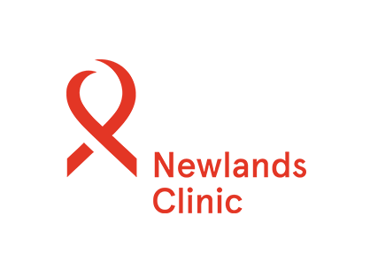

Access our full core curriculum, private virtual clinical laboratories, structured study guides, and grading pipelines.
Course content, grading quizzes, and core documentation are restricted to verified academic candidates.
Watch this mandatory introductory layout brief to understand how your coursework, pipeline protocols, and weekly grading metrics are calibrated.
Structuring standardized operational hypotheses using Populations, Interventions, Comparators, and Outcomes parameters.
Defining strict inclusion boundaries, sample frames, and generalizability thresholds across clinical cohorts.
Calculating accurate point prevalence, cumulative incidence densities, and absolute mortality metrics.
Safely converting electronic health records (EHR) and registers into actionable, anonymized research data.
Deriving mathematically sound Relative Risks (RR) and Odds Ratios (OR) from cross-tabulated variables.
Isolating population attributable risks to determine potential clinical public health prevention impact.
Differentiating arithmetic configurations of central tendencies and operational tracking of dispersion spreads.
Understanding the standard normal Gaussian curve and configuring standard error variances across clinical distributions.
Structuring pristine, publication-ready mathematical summaries for demographic study metrics.
Configuring null settings, alpha significance boundaries, and statistical power metrics.
Executing dependent and independent T-tests alongside Chi-Square distribution tests for categorical parameters.
Isolating and statistically adjusting for lurking variables that introduce distortion parameters into outcome analyses.